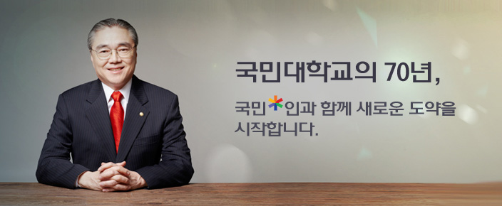

인사말

국민대학교 총장 유지수입니다.
국민대학교를 찾아주신 여러분을 진심으로 환영합니다.
국민대학교는 1946년 해공 신익희 선생을 중심으로 상해 임시정부 요인들이 세운 민족혼이 깃든, 광복 후 최초의 민족사학으로 출발했습니다. 1959년 이래 학교를 중흥하신 성곡 김성곤 선생의 ‘인본주의·민족주의·문화주의·산업주의’라는 육영 이념을 따라 비약적인 발전을 거듭하여 현재 재적생 24,000여 명의 대학으로 크게 성장하였습니다.
우리 대학은 급변하는 교육 환경과 사회적 변화 속에서도 구성원들의 헌신적인 노력을 통해 세계 속 글로벌 대학으로의 도약을 위한 발판을 마련하였습니다. 이제는 개교 70주년 국민대학교의 지난 역사를 자랑스럽게 되돌아보고 앞으로의 100년을 준비하기 위해 사업 하나하나를 통하여 글로벌 명문대학으로의 도약을 준비할 것입니다.
국민대학교의 발전은 변화에서 시작됩니다. 변화(Change)는 곧 기회(Chance)이며, 기회는 곧 도전(Challenge)입니다. 급변하는 환경에 능동적으로 대처하고, 위기관리를 위해 끊임없이 변화하고 도전해야 합니다.
국민대학교는 이러한 현실 속에서 주도적인 우위를 선점하기 위해 외부자금 유치의 극대화, 합리적 자원배분 기준 확립, 효율적 조직 시스템 구축이라는 3대 경영 목표를 세워, 우리 대학의 교육 기반을 공고히 하고자 노력하고 있습니다.
꿈은 혼자 꾸면 꿈으로 남지만, 여럿이 함께 꾸면 현실이 됩니다. 국민대학교는 여러분과 같은 꿈을 꾸겠습니다. 여러분과 함께 변화하고, 기회를 만들고 도전을 하겠습니다. 국민대학교와 함께라면 불가능은 없습니다. 우리가 자랑하기보다 남들이 칭찬하고 부러워하는 대학, 졸업생이 자부심을 갖는 대학, 간판을 내세우기보다 역량과 성실성을 믿는 대학으로 우리 국민대학교를 발전시키겠습니다. 여러분의 변함없는 지지와 성원을 부탁드립니다.
감사합니다.